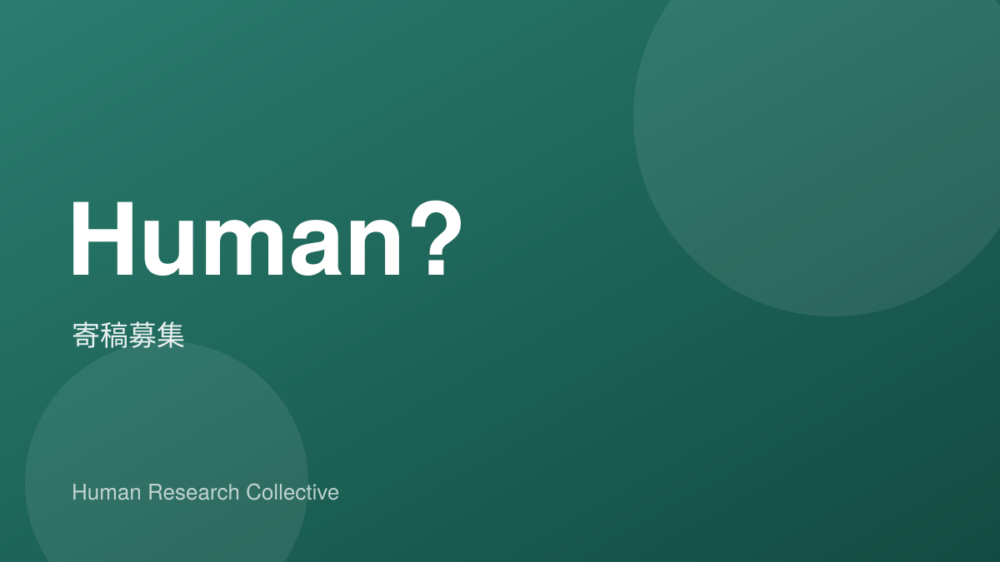

1. Human?について
Human?の中心テーマは「人間とは何か？」です。人間とはどのような生き物なのか。何を大切にしているのか。なぜ生きているのか。
みなさんが生活経験の中で抱いてきた「人間とは？」という問いへのそれぞれの解を、エッセイ、批評、小説、詩など多様な言語表現によって提示していただき、人間という存在を多角的に考えることを目指します。
特定のトーンは設けません。鋭くても、静かでも、挑発的でも、実験的でも構いません。
読者は特に想定していませんが、強いて挙げるなら、人文・社会科学に関心をもつ若い世代を視野に入れています。
2. 原稿仕様
2-1 文字数
最小 600文字。上限なし。 ※詩の場合は文字数制限なし
2-2 形式
エッセイ、批評、詩など、文字による表現であれば自由。
2-3 言語
日本語または英語 ※英語原稿の場合、編集部の文責で抄訳を付録します
2-4 提出形式
Google Docs、Word、Pagesにて、指定したGoogleドライブフォルダに提出。
2-5 レイアウト
原稿時点では縦書き・横書き自由。最終構成は縦書きを予定。
3. 内容ガイドライン
3-1 歓迎する内容
- 個人的体験から抽象的概念へ昇華していくもの
- 徹底的に、個人的経験を写実的に記述したもの
- 強いメッセージ性を持つもの
一方で、誰にでも書ける普遍的な一般論は歓迎しません。「あなたでなければ書けないもの」を期待しています。
3-2 掲載不可
- 過度な性的表現を含むもの
- 差別を目的とした表現を含むもの
- 誹謗中傷を含むもの
4. 引用・参考文献
4-1 引用のルール
引用文献は原則として文末に記載してください。引用していない参考文献の列挙は任意です。
4-2 引用形式
記載方法は「社会学評論スタイルガイド」に準拠してください。
5. 著作権・利用
5-1 著作権の考え方
著作権は各著作者に帰属します。
5-2 著作物の別媒体での公開
各自のWeb媒体等での再掲は可能です（期間制限なし）。
5-3 二次利用
編集部による再録、Human?ウェブサイトへの掲載等、二次利用の可能性があります。
6. 編集プロセス
6-1 〆切
各号ごと、各寄稿者ごとに編集部からご提案します。
6-2 原稿の修正
編集部よりリライトをお願いする場合があります。
6-3 掲載可否の最終判断
掲載可否の最終判断は編集部が行います。
7. 著者情報
7-1 著者情報の掲載
原則、全ての寄稿文の文末に著者情報を掲載します。
7-2 プロフィール
- プロフィール：最大150文字
- 肩書き：指定がない場合は不記載
- SNSリンク：掲載可
- 顔写真：掲載不可
8. 謝礼・送付
8-1 謝礼について
謝礼はありません。ご了承ください。今後、販売する可能性がある場合には事前に売上の取り扱いについて、編集部からご相談させていただきます。
8-2 ZINEのお渡し
東京近郊の方には、上野が直接お渡ししに行きます。原稿料には全く及ばないですが、美味しいコーヒーをご馳走させてください。遠方の方には、希望部数お送りします。
9. 発行情報
9-1 印刷部数
10〜20部
9-2 判型
A5、カラー印刷予定。
最後に
「人間とは何か？」という問いは、哲学の教科書の中にあるものではありません。
それは、夜眠れないときにふと浮かぶ疑問であり、誰かを愛したときの震えであり、怒りや喪失のなかで突きつけられる現実です。
このZINEは、正解を集めるための場所ではありません。むしろ、あなたの揺らぎ、葛藤、確信、矛盾、そうした生の痕跡を、言葉として刻む場所です。誰にでも言えることではなく、あなたにしか書けないことを書いてください。
抽象へ跳躍してもいい。徹底的に具体へ沈潜してもいい。思想として切り裂いてもいいし、祈りのように静かでもいい。
ただ1つお願いしたいのは、安全な場所から書かないことです。あなたが本当に引き受けてきた経験、あなたが本気で考えてきた問い、あなたがまだ言葉にしきれていない衝動。それらを、この小さなA5の紙面にぶつけてください。
10部かもしれない。20部かもしれない。けれど、部数の問題ではありません。ここに並ぶ言葉が、本気で「人間」を掘り下げたものであれば、それは確実に誰かの内部を揺らします。
このZINEは作品集ではなく、1つの知的実験であり、1つの思想的賭けです。
あなたの言葉で、この問いを一段深くしてください。
ぜひ、お力をお貸しください。よろしくお願いいたします。